Field notes · Manton, North Lincolnshire · Est. 2026
Rectory Naturecam
Wildlife on the trail camera in the garden at The Old Rectory, Manton — 16 May to 2 July 2026
IMAG1733.JPGTawny owl facing the camera, staring straight down the lens — 19 Jun 2026, 22:12. The hero shot.
2,775files recorded
250wildlife files
11species
26video clips
Search filters the species below by name. Household captures (people, the dog, the cats) are not shown on this site.
No visitors match that search.
Field notes
The big night — 17–18 June
The busiest night of the whole 48 days. Two owls on the lawn together at 23:37 — and the same two on the ground eighteen minutes later. A tawny owl on the lawn at 00:25. An owl in flight at 02:49. And at 04:19 a muntjac by the willow — chased off by the household dog a minute later.
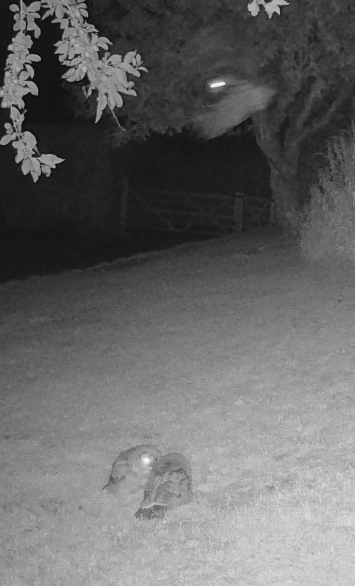
IMAG1558.JPGTwo owls on the lawn, a third in flight — 17 Jun 2026, 23:37
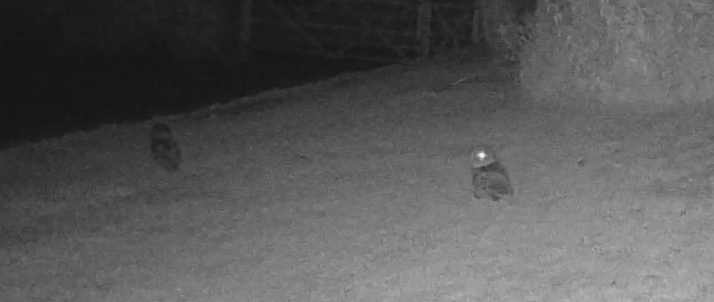
IMAG1567.JPGTwo owls on the ground — 17 Jun 2026, 23:55
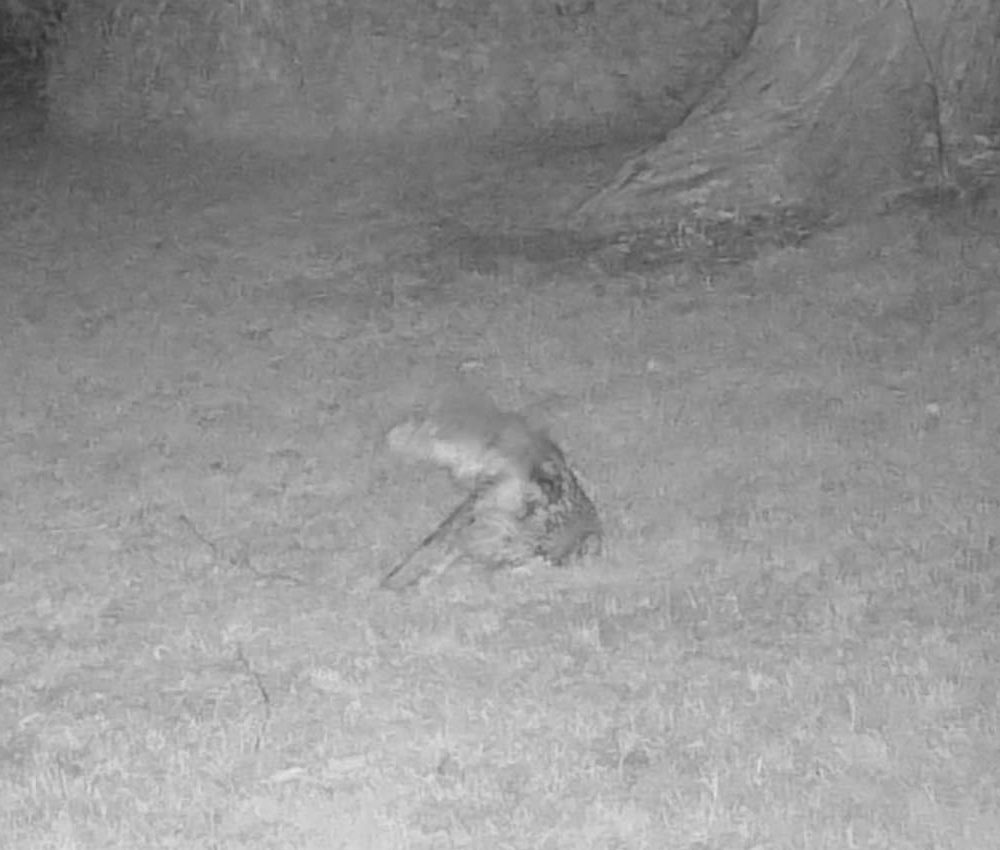
IMAG1576.JPGTawny owl on the lawn — 18 Jun 2026, 00:25
Regular visitors
WoodpigeonColumba palumbus112 files · 23 days
The garden's most faithful visitor — here on 23 of the 48 days, usually in ones and twos on the lawn, sometimes in pairs on the gate. Often the bird that sets the camera off in the morning.
Seen Sun 17 May – Sun 28 Jun.
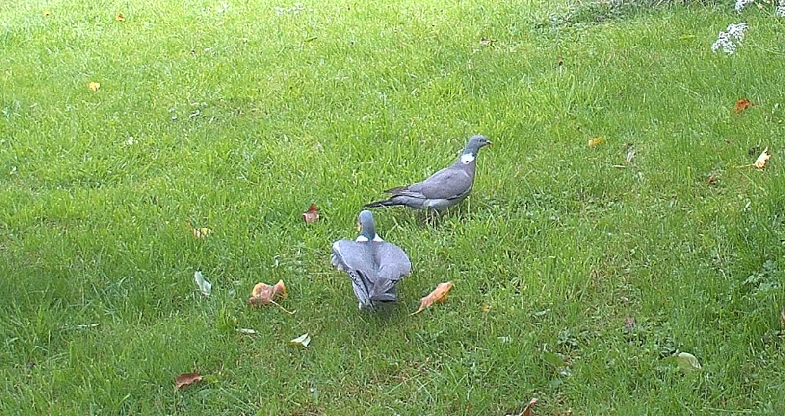
IMAG0134.JPGTwo woodpigeons on the lawn — 19 May 2026, 12:46
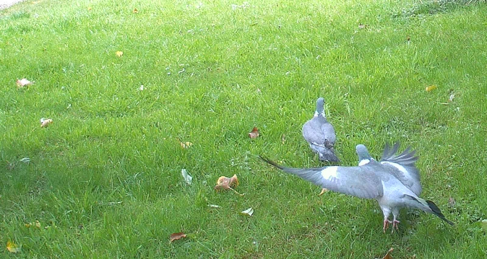
IMAG0133.JPGWoodpigeon landing, wings spread — 19 May 2026, 12:46
A frame showing two visitors counts for both — six frames show a woodpigeon with something else.
MagpiePica pica4 files · 2 days
Two visits, a week apart, both on the lawn in the morning.
Seen Mon 25 May – Sat 30 May.
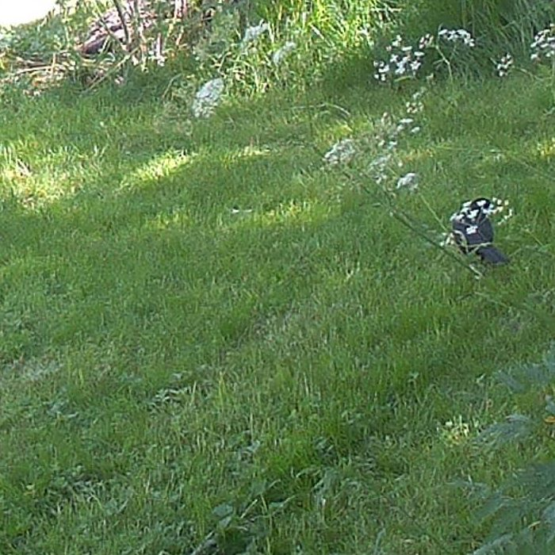
IMAG0304.JPGMagpie on the lawn — 25 May 2026, 10:15
Visit log (4 files)
Mon 25 May — IMAG0304.JPG 10:15:02, IMAG0305.JPG 10:15:02
Sat 30 May — IMAG0484.JPG 07:38:42, IMAG0499.JPG 09:08:25
A frame showing two visitors counts for both — six frames show a woodpigeon with something else.
Carrion crowCorvus corone2 files · 1 day
A single crow, one morning in late May, striding across the lawn.
Seen Tue 26 May.
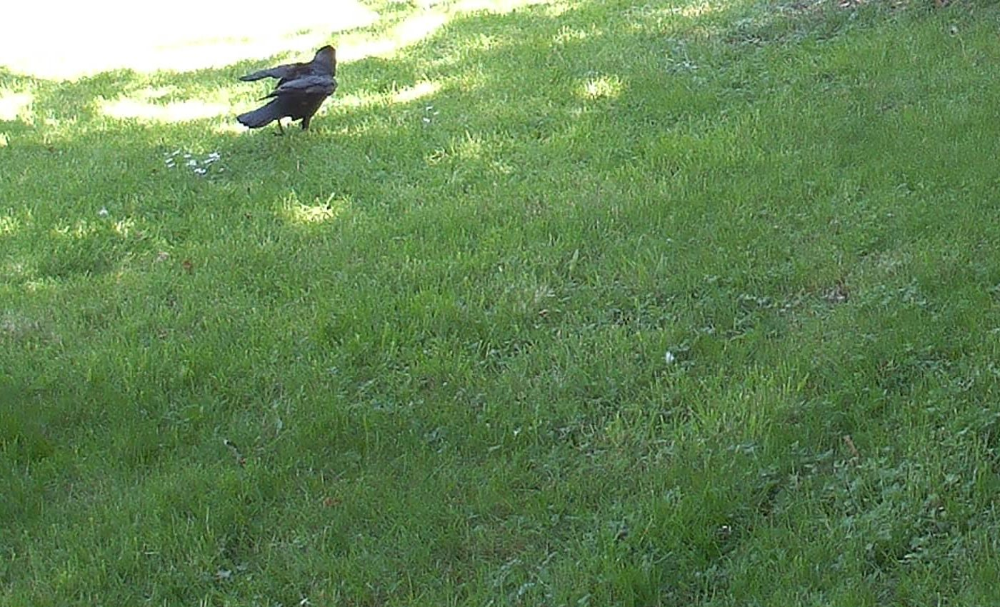
IMAG0343.JPGCarrion crow on the lawn — 26 May 2026, 11:34
Visit log (2 files)
Tue 26 May — IMAG0343.JPG 11:34:51, IMAG0344.JPG 11:34:52
A frame showing two visitors counts for both — six frames show a woodpigeon with something else.
Song thrushTurdus philomelos1 file · 1 day
One sighting, 24 June — a small thrush-like bird on the lawn beside a woodpigeon. The identification is a best guess, not a certainty.
⚠ Identification tentative.
Seen Wed 24 Jun.
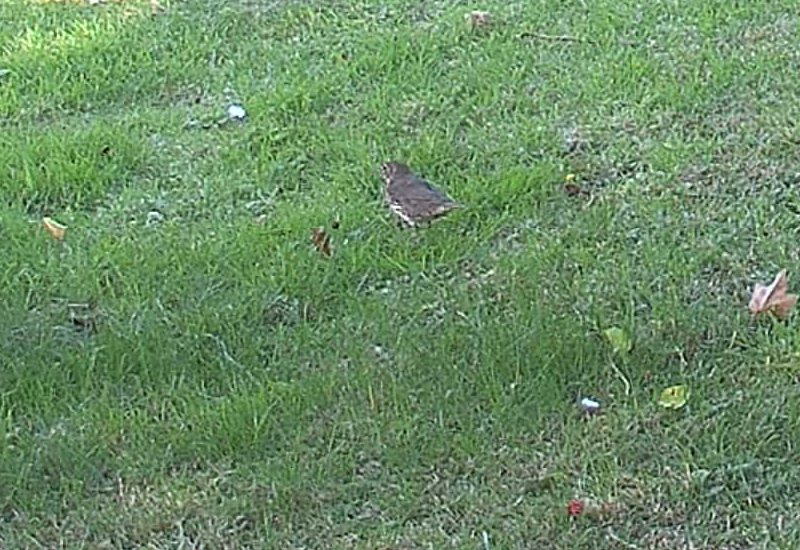
IMAG1943.JPGSong thrush on the lawn — 24 Jun 2026, 08:02
Visit log (1 files)
Wed 24 Jun — IMAG1943.JPG 08:02:41
A frame showing two visitors counts for both — six frames show a woodpigeon with something else.
Small bird — unidentified3 files · 3 days
Two small birds the camera caught too briefly to name, and one blurred bird in flight that may be a pigeon or a dove. They stay unidentified rather than guessed.
Seen Wed 20 May – Wed 17 Jun.
No still photograph was clear enough to show — this visitor is only on video, below.
A frame showing two visitors counts for both — six frames show a woodpigeon with something else.
Unusual visitors
OwlStrix aluco (probably)61 files · 8 days
The star of the show. Nothing for the first month, then eight nights of owls from 17 to 26 June — hunting the lawn, twice in pairs, once in flight, and sometimes down on the ground. On the big night, the same two owls were caught on the lawn at 23:37 and on the ground eighteen minutes later. The species is unconfirmed: the early frames read as barn owl, the later ones as tawny, and tawny is the likelier garden owl.
⚠ Species unconfirmed — tawny likelier than barn.
Seen Wed 17 Jun – Fri 26 Jun.
IMAG1733.JPGTawny owl facing the camera — 19 Jun 2026, 22:12
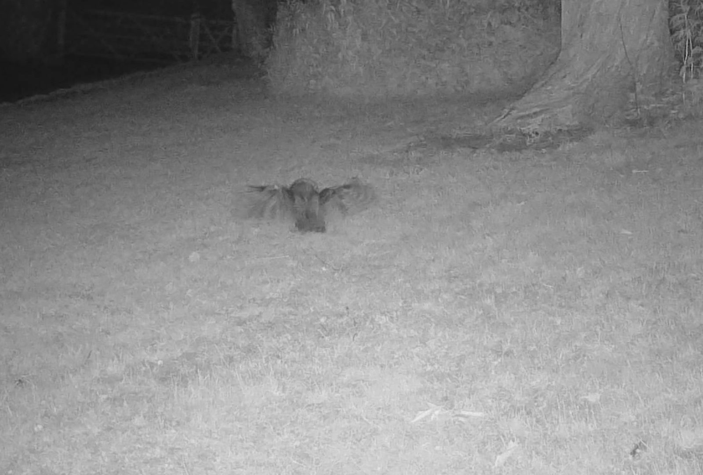
IMAG1735.JPGOwl with wings spread, centre lawn — 20 Jun 2026, 00:09IMAG1558.JPGTwo owls on the lawn, a third in flight — 17 Jun 2026, 23:37IMAG1567.JPGTwo owls on the ground — 17 Jun 2026, 23:55
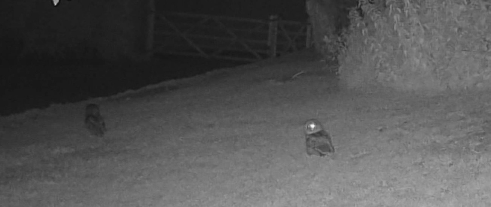
IMAG1568.JPGTwo owls on the ground, a second later — 17 Jun 2026, 23:55
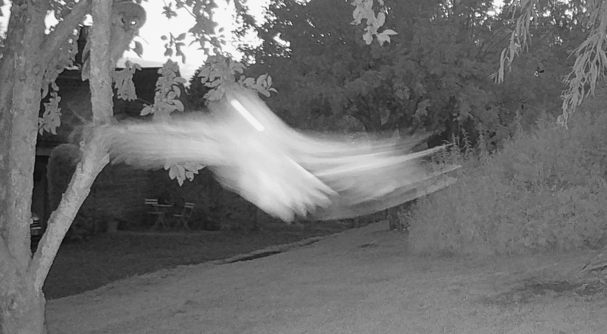
IMAG1597.JPGOwl in flight across the garden — 18 Jun 2026, 02:49IMAG1576.JPGTawny owl on the lawn at night — 18 Jun 2026, 00:25
Fri 26 Jun — IMAG2092.JPG 02:38:49, IMAG2093.JPG 02:38:50
A frame showing two visitors counts for both — six frames show a woodpigeon with something else.
Muntjac deerMuntiacus reevesi10 files · 5 days
A small, reddish deer, probably muntjac — a non-native species, now widespread. Four visits: at dusk on 2 June, overnight on 16–17 June, and again on 25 and 29 June. On 17 June the household dog chased it off at 04:20, minutes after it was photographed by the willow.
Seen Tue 2 Jun – Mon 29 Jun.
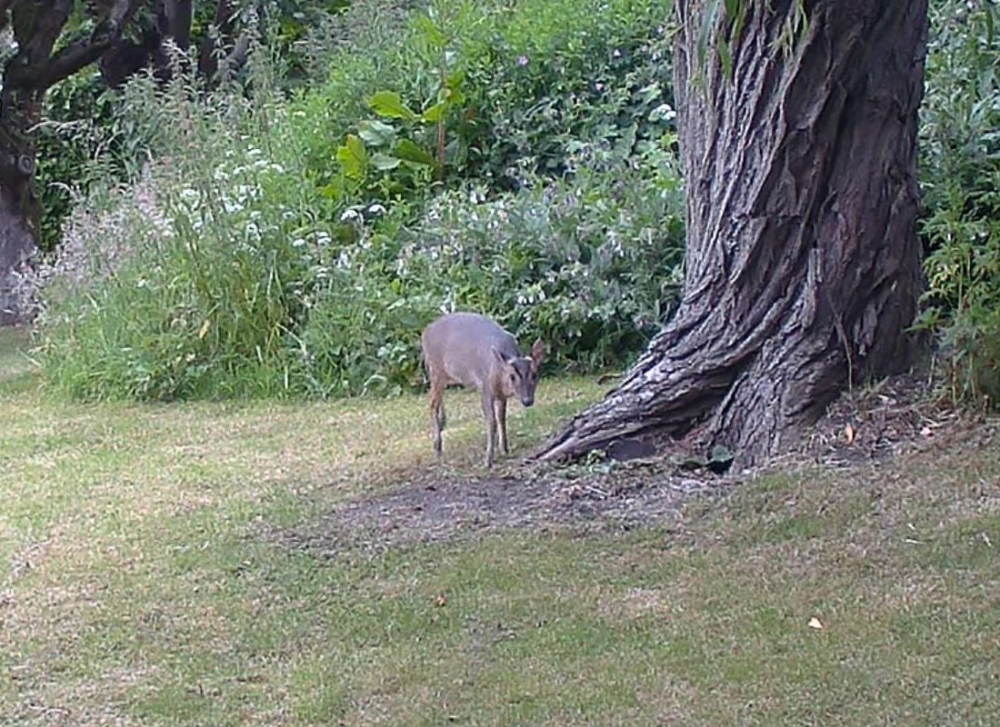
IMAG1504.JPGMuntjac by the willow, facing the camera — 17 Jun 2026, 04:19
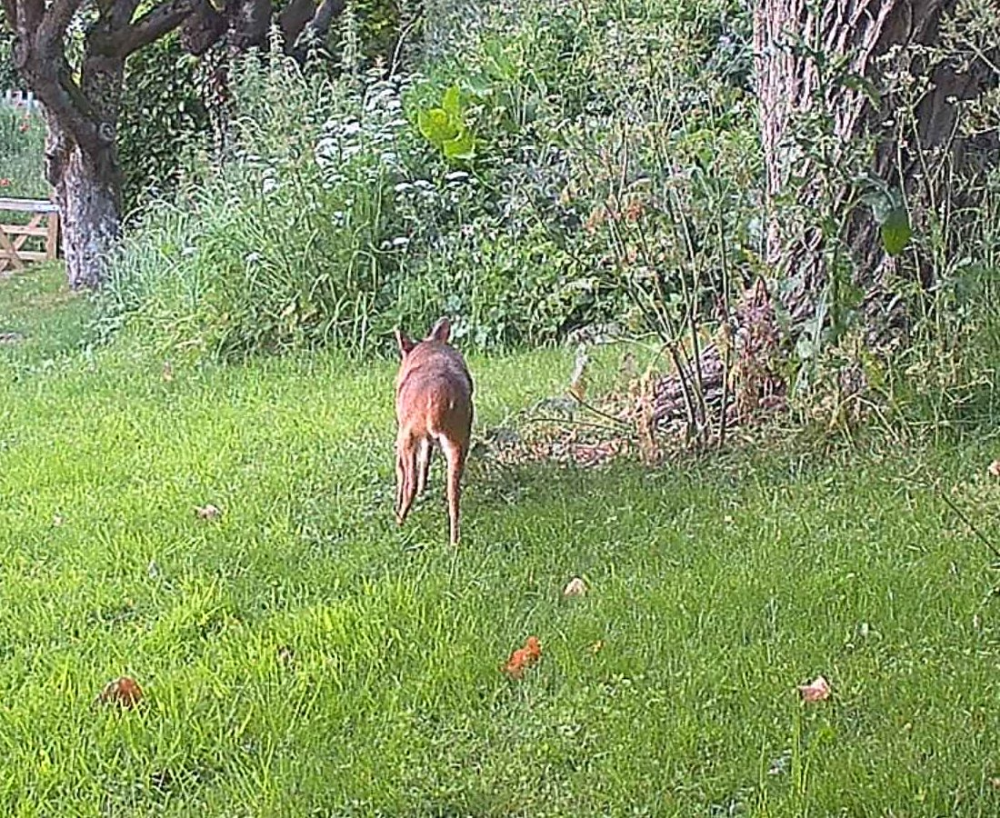
IMAG0616.JPGMuntjac at dusk, heading for the willow — 2 Jun 2026, 19:49
Visit log (10 files)
Tue 2 Jun — IMAG0616.JPG 19:49:34, IMAG0617.JPG 19:49:34
Tue 16 Jun — IMAG1501.JPG 20:51:08, IMAG1502.JPG 20:51:08
Wed 17 Jun — IMAG1504.JPG 04:19:18, IMAG1505.JPG 04:19:18
Thu 25 Jun — IMAG2089.JPG 23:21:32, IMAG2090.JPG 23:21:32
Mon 29 Jun — IMAG2383.JPG 05:07:48, IMAG2384.JPG 05:07:49
A frame showing two visitors counts for both — six frames show a woodpigeon with something else.
Roe deerCapreolus capreolus9 files · 2 days
A doe, twice — at dawn on 22 May, crossing the lawn, and in daylight on 6 June by the willow. A few deer frames are ambiguous between roe and muntjac.
⚠ A few deer frames are ambiguous between roe and muntjac.
Seen Fri 22 May – Sat 6 Jun.
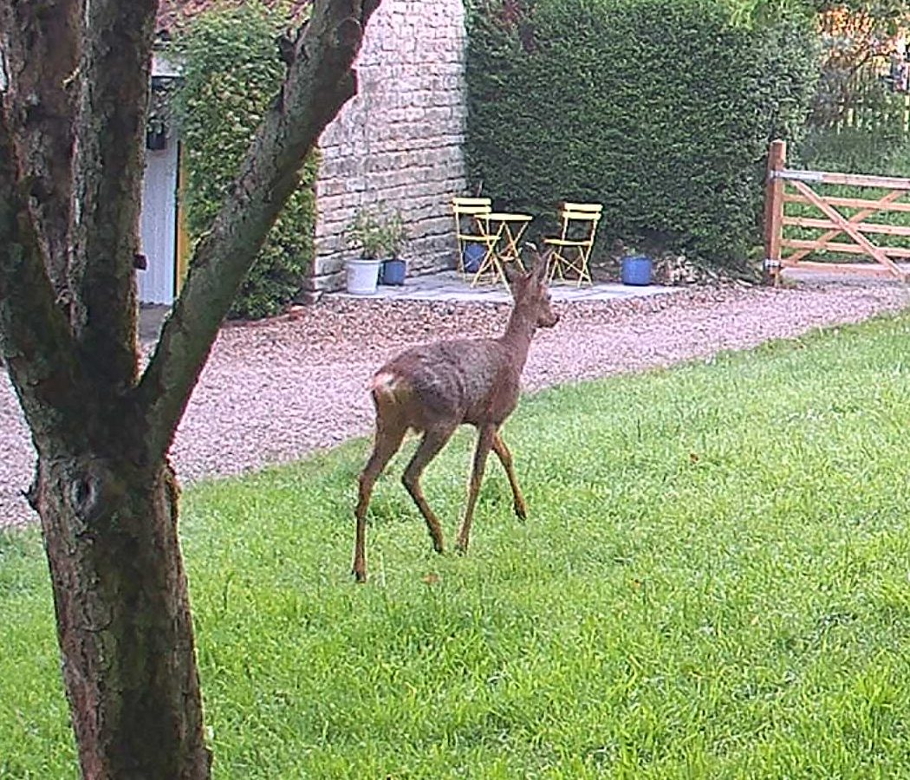
IMAG0196.JPGRoe deer doe crossing the lawn at dawn — 22 May 2026, 04:33
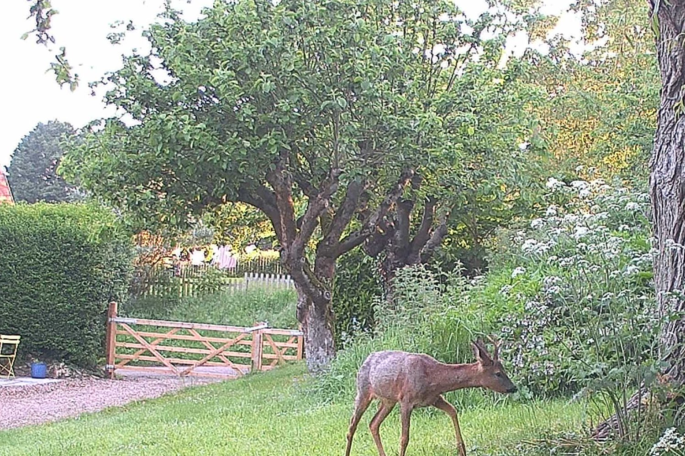
IMAG0199.JPGRoe deer doe browsing by the big tree — 22 May 2026, 04:37
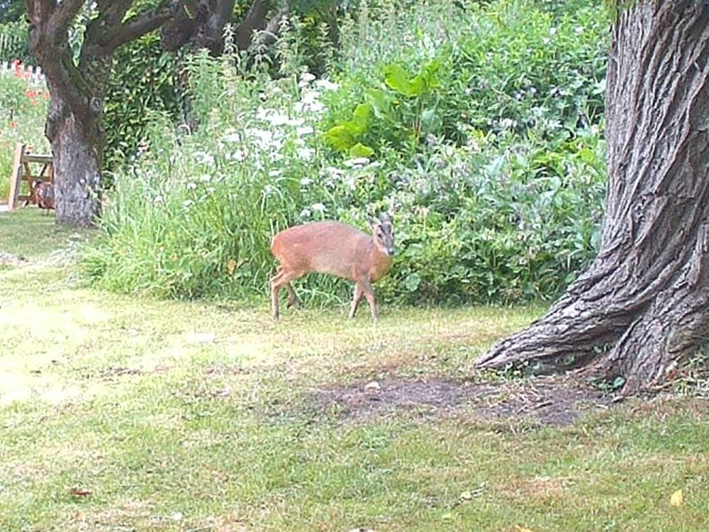
IMAG0958.JPGRoe deer doe by the willow in daylight — 6 Jun 2026, 13:17
Fri 22 May — IMAG0196.JPG 04:33, IMAG0197.JPG 04:33, IMAG0198.MP4 04:33 ▶ video, IMAG0199.JPG 04:37, IMAG0200.JPG 04:37, IMAG0201.MP4 04:37 ▶ video
Sat 6 Jun — IMAG0958.JPG 13:17, IMAG0959.JPG 13:17, IMAG0960.MP4 13:17 ▶ video
A frame showing two visitors counts for both — six frames show a woodpigeon with something else.
Red foxVulpes vulpes2 files · 1 day
One visit, 4 June at 01:32 — a fox-like shape by the willow in night infrared, bushy tail visible. Night infrared only, so the identification carries a question mark.
⚠ Night infrared only.
Seen Thu 4 Jun.
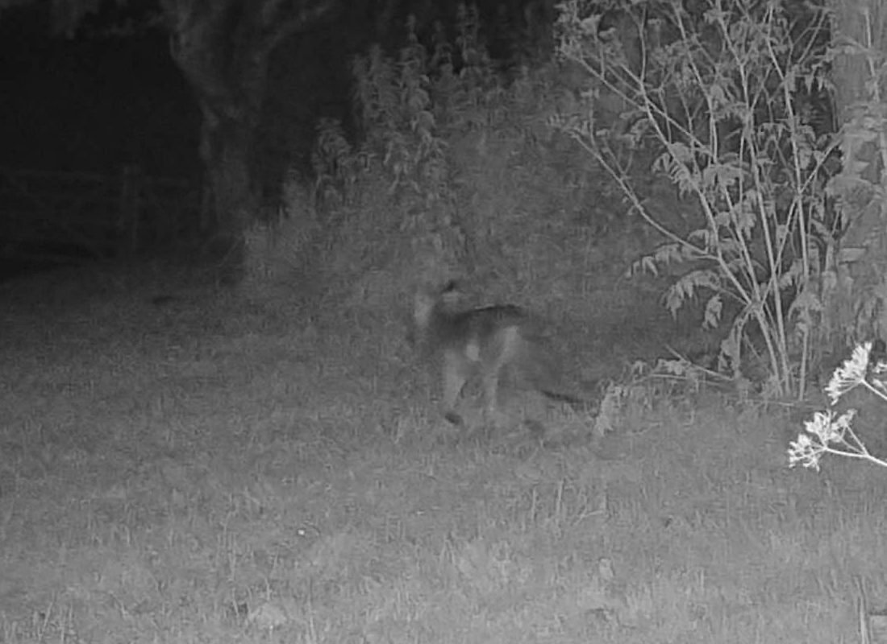
IMAG0670.JPGRed fox by the willow — 4 Jun 2026, 01:32
Visit log (2 files)
Thu 4 Jun — IMAG0670.JPG 01:32:19, IMAG0671.JPG 01:32:19
A frame showing two visitors counts for both — six frames show a woodpigeon with something else.
About the camera
The camera is a NatureSpy trail camera, nicknamed “NatureBinky”, watching the lawn, the willow and the gate at The Old Rectory, Manton. It ran from 16 May to 2 July 2026 — 48 days, 2,775 files. It fires in bursts of two, so one visit usually means two files.
Half the triggers were empty — mostly cars passing on the road (219 files show a vehicle and nothing else). The worst run was the morning of 2 July: about 145 empty frames in a row, 08:21–09:54. Videos were far noisier than photos — 67.9% of them empty, against 42.3% of photos.
No squirrel appeared at all in the 48 days, despite being an expected regular. The household — people, the dog and the cats — were caught often, but they are not shown here: this site is wildlife only.
Helping the visitors
Owl (protected under the Wildlife and Countryside Act 1981): the garden already works for it. The one thing that genuinely helps is no rodenticides — poisoned prey kills owls. Keep the big tree and the willow it perches in.
Muntjac (non-native): enjoy the visits, don’t feed them.
Roe deer, fox: passing visitors — no action needed.
Identification notes — read honestly
The owl species is unconfirmed: the early frames read as barn owl, the later ones as tawny. Tawny is the likelier garden owl.
What were first read as hedgehogs on 17–18 June turned out, on a closer look at zoomed frames, to be owls on the ground — so no hedgehog is listed.
A frame first read as a pheasant asleep on the lawn at 00:25 on 18 June turned out, on the full video clip, to be a tawny owl.
A few deer frames are ambiguous between roe and muntjac.
The fox is night infrared only, and the song thrush is a tentative identification.
Two very blurry frames from 30 May were once read as a possible badger; they are too unclear to claim, so no badger is listed.
A video from 17 May was first read as a grey heron; watching the full clip shows only the household dog in the vegetation, so no heron is listed.
Counts include frames where two visitors appear together — a frame with a woodpigeon and a blackbird counts for both.